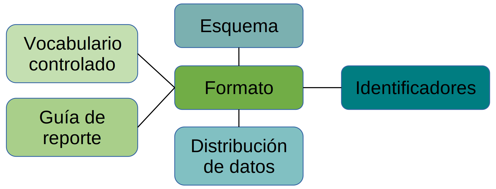

4 Describiendo datos de manera consistente
4.1 ¿Qué son los metadatos?
En este corto video con subtítulos, Sarah Morgan, Coordinadora de Entrenamiento Científico en el EMBL-EBI, discute sobre qué son los metadatos y por qué es importante llevar registro de esta información en los experimentos biológicos.
4.2 La importancia de los metadatos
Para ser útiles, los datos necesitan ponerse en contexto. Una forma de hacerlo es asociarlos con metadatos (es decir, datos sobre los datos). Si estás involucrado en secuenciar muestras del ambiente, tal vez para comprender la biodiversidad en diferentes condiciones, o para investigar las asociaciones entre el rendimiento de los cultivos y las diferencias en la biota del suelo, sería útil saber por ejemplo cuándo y dónde fueron tomadas tus muestras. Los descriptores estandarizados de tiempo de colección y localización geográfica pueden ser asociados con cualquier secuencia derivada de cada muestra. Los metadatos son tan importantes que hay bases de datos dedicadas a organizarlos. Por ejemplo, la base de datos BioSamples contiene metadatos sobre muestras usadas para generar datos almacenados en ENA, PRIDE y ArrayExpress. Almacenar metadatos de esta manera asegura que se referencie una muestra en específico de manera consistente en diversos recursos de datos.
Imaginemos que la misma muestra de germoplasma almacenada en un banco de semillas ha sido usada para secuenciamiento genómico, proteómica y RNAseq; estos tres experimentos relacionados pueden ser relacionados uno con otro haciendo que todos apunten al mismo registro en la base de datos de BioSamples. Es entonces posible mirar patrones de expresión genética y producción de proteínas en esta muestra y compararlos con otros para aprender sobre cómo la semilla se adapta a un ambiente en específico. Almacenar los metadatos en solo una base de datos, en vez de que sean parte de los registros en tres o más bases de datos por separado, es también más económico en términos de almacenamiento de datos (un asunto que debe ser tomado de manera extremadamente seria en la era del big data).

4.3 Describiendo los datos y metadatos de manera consistente
Es vital que tanto los datos como los metadatos estén representados de manera consistente. Para poner un ejemplo sencillo, imaginemos que dos grupos han estado trabajando en el efecto de los antidepresivos en la expresión genética en cultivos celulares primarios de neuronas. Uno de ellos usa los nombres genéricos de los medicamentos para describir sus experimentos; el otro usa los nombres propietarios. Además, a pesar de aislar sus células del mismo tejido usando métodos muy similares, ellos tienen nombres diferentes para sus líneas celulares y usan estos cuando envían sus archivos a la base de datos. Un computador pensaría que estos dos experimentos no estaban para nada relacionados; e incluso un humano buscando un experimento sería probable que no encontrara el otro. Esta es la razón por la cual existen estándares acordados para describir los datos, y la razón por la cual bases de datos como aquellas en EMBL-EBI le piden a los investigadores anotar sus datos usando estos estándares cuando envían sus datos.
Para muchos tipos de metadatos existen estándares internacionales aceptados que son aplicables a muchos campos; por ejemplo, si queremos representar una localización, podemos usar la notación estándar para la longitud y latitud. Sin embargo, a medida que han emergido nuevas áreas de la biología, y a medida que se han desarrollado nuevas tecnologías para estudiarlas, la comunidad de investigación ha tenido que desarrollar y acordar nuevos estándares.